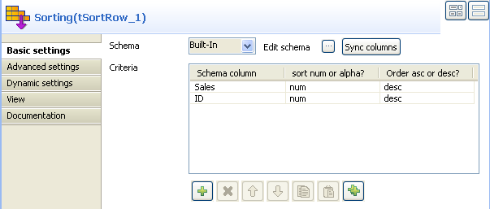

Scenario: Sorting entries
This scenario describes a three-component job. A tRowGenerator is used to create random entries which are directly sent to a tSortRow to be ordered following a defined value entry. In this scenario, we suppose the input flow contains names of salespersons along with their respective sales and their years of presence in the company. The result of the sorting operation is displayed on the Run job console.

- Click and drop the three components required for this use case: tRowGenerator, tSortRow and tLogRow.
- Connect them together using Row main links.
- On the tRowGenerator editor, define the values to be randomly used in the Sort component. For more information regarding the use of this particular component, see tRowGenerator properties.
- In this scenario, we want to rank each salesperson according to its Sales value and to its number of years in the company.
- Double-click on tSortRow to display the Properties tab panel. Set the sort priority on the Sales value and as secondary criteria, set the number of years in the company.
- Use the plus button to add the number of rows required. Set the type of sorting, in this case, both criteria being integer, the sort is numerical. At last, given that the output wanted is a rank classification, set the order as descending.
- Make sure you connected this flow to the output component, tLogRow, to display the result in the Job console.
- Press F6 to run the Job or go to the Run Job panel and click Run.The ranking is based first on the Sales value and second on the number of years of experience.

